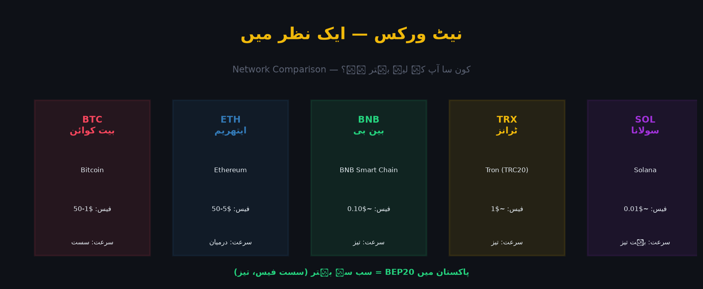

نیٹ ورک (Network) = وہ بلاک چین جس پر ایک خاص کوائن چلتا ہے۔ بیت کوائن، ایتھریم، BNB Chain، ٹرون — ہر ایک الگ نیٹ ورک ہے۔ اگر آپ ایک نیٹ ورک کے ایڈریس پر دوسرے نیٹ ورک کا کوائن بھیجیں تو فنڈ ضائع ہو سکتا ہے۔ اسی لیے یہ باب بائننس کے ہر صارف کے لیے بنیادی حیثیت رکھتا ہے۔

بلاک چین = ایک عوامی، غیر مرکزی (decentralized) ڈیجیٹل رجسٹر جو ہر لین دین کو مستقل طور پر ریکارڈ کرتا ہے۔
Transaction بنتی ہے
→ بہت سی ٹرانزیکشنز ایک Block میں جمع ہوتی ہیں
→ ہر Block پچھلے Block سے cryptographically جڑتا ہے (Chain)
→ ہر نیٹ ورک نوڈ کے پاس وہی ریکارڈ کی کاپی ہوتی ہے
→ اس لیے کوئی اکیلا شخص ریکارڈ بدل نہیں سکتا💡 بلاک چین ایک کھلی ڈائری ہے جس کی درجنوں ہزار کاپیاں ہر جگہ موجود ہیں۔ اگر کوئی ایک کاپی بدل بھی دے، باقی کاپیاں اُسے مسترد کر دیتی ہیں — یہی اس کی حفاظت کی بنیاد ہے۔
نیٹ ورک = وہ مخصوص بلاک چین سسٹم جس پر آپ کا کوائن موجود ہوتا ہے اور جس کے ذریعے منتقلی ہوتی ہے۔
| نیٹ ورک | ٹوکن کا مخفف | فیس | رفتار |
|---|---|---|---|
| Bitcoin | BTC | متغیر (بھیڑ پر منحصر) | نسبتاً سست |
| Ethereum | ERC20 | زیادہ | درمیانہ |
| BNB Smart Chain | BEP20 | بہت کم | تیز |
| Tron | TRC20 | بہت کم | تیز |
| Solana | SPL | نہایت کم | بہت تیز |
⚠️ جدول میں دی گئی فیسیں اندازاً ہیں اور ہر وقت بدلتی رہتی ہیں۔ فیصلہ کرنے سے پہلے ہمیشہ بائننس کے وائیدراول/ڈیپازٹ صفحے پر اُس لمحے کی فیس دیکھیں۔
یہ بائننس کے نئے صارفین کی سب سے بڑی غلطی ہے: "USDT تو USDT ہے، کیسے نیٹ ورک فرق پڑے گا؟"
سچ یہ ہے کہ ایک ہی کوائن، جیسے USDT، کئی مختلف بلاک چینز پر دستیاب ہے:
| USDT ورژن | نیٹ ورک | ایڈریس کی پہچان |
|---|---|---|
| USDT (TRC20) | Tron | T سے شروع |
| USDT (ERC20) | Ethereum | 0x سے شروع |
| USDT (BEP20) | BNB Smart Chain | 0x سے شروع |
| USDT (SPL) | Solana | مختلف، حروف/اعداد |
🔴 یہ سب ایک دوسرے سے الگ جیب ہیں۔ TRC20 پر بھیجا گیا USDT اُس ERC20 ایڈریس میں نہیں پہنچے گا، چاہے دونوں کا نام "USDT" ہی ہو۔ نیٹ ورک وہ راستہ ہے، کوائن صرف سامان ہے۔
آپ کا دوست کہتا ہے: "مجھے USDT بھیج دو"
آپ پوچھیں: "کس نیٹ ورک پر؟"
دوست: "کیا فرق پڑتا ہے، USDT تو USDT ہے!"
آپ TRC20 بھیجیں — مگر اُس کا والٹ صرف ERC20 سپورٹ کرتا ہے
نتیجہ: فنڈ گیا، واپسی ناممکن ❌
سبق: ہمیشہ پوچھیں "کس نیٹ ورک پر؟"| قسم | مطلب | مثال |
|---|---|---|
| Native | جس نیٹ ورک کا اپنا "اصلی" کوائن | BTC (Bitcoin)، BNB (BNB Chain) |
| Pegged / Issued | ایک ٹیم نے دوسرے نیٹ ورک پر جاری کیا، قدر جُڑی ہوئی | USDT، USDC |
| Wrapped | ایک کوائن کی دوسرے نیٹ ورک پر لپٹی ہوئی شکل | WBTC، WETH |
💡 اسی لیے آپ کو بائننس پر "USDT" کے ساتھ نیٹ ورک کا انتخاب دکھتا ہے — وہ ایک ہی قیمت والا، مگر مختلف نیٹ ورکس پر موجود ٹوکن ہے۔
| ایڈریس کیسے شروع ہوتا ہے | ممکنہ نیٹ ورک |
|---|---|
bc1... یا 1... یا 3... | Bitcoin |
0x... | Ethereum / BNB Chain / Polygon وغیرہ |
T... | Tron (TRC20) |
r... | Ripple (XRP) |
⚠️
0xوالے ایڈریس کئی نیٹ ورکس میں مشترک ہو سکتے ہیں (ERC20, BEP20, Polygon...)۔ اس لیے صرف0xدیکھ کر مطمئن نہ ہوں — نیٹ ورک کا نام بھی الگ سے میچ کریں۔
| تصور | مطلب |
|---|---|
| Network Fee | نیٹ ورک کا چارج، بھیڑ بڑھنے پر مہنگا |
| Confirmation | نیٹ ورک کی طرف سے ٹرانزیکشن کی منظوری |
| Required Confirmations | کچھ ایکسچینج فنڈ تب تک نہیں دیتے جب تک مخصوص تصدیقاں نہ ہوں |
| Congestion | زیادہ بھیڑ = زیادہ فیس اور تاخیر |
💡 ERC20 کی فیس عموماً BEP20/TRC20 سے کئی گنا زیادہ ہوتی ہے۔ چھوٹی رقم کے لیے سستا نیٹ ورک چنیں — مگر صرف تب، جب وصول کرنے والا بھی وہی نیٹ ورک سپورٹ کرتا ہو۔
USDT 100 وائیدراول:
TRC20 ≈ $1 ✅ سستا
BEP20 ≈ $1 ✅ سستا
ERC20 ≈ $5-15 (بھیڑ پر منحصر) ❌ مہنگا
نتیجہ: چھوٹی رقم کے لیے TRC20/BEP20بہترین1. وصول کرنے والے کا نیٹ ورک معلوم کریں (اُس کے والٹ سے)
2. بائننس پر وہی نیٹ ورک منتخب کریں
3. ایڈریس کا prefix ملائیں
4. Memo/Tag درکار ہے؟ (XRP, XLM, ATOM, BNB-BEP2)
5. چھوٹی رقم سے ٹیسٹ کریں✅ "راستہ پہلے دیکھو، سامان بعد میں بھیجو" — نیٹ ورک ہمیشہ پہلے طے کریں، ایڈریس بعد میں پیسٹ کریں۔
0x دیکھ کر نیٹ ورک کی تصدیق نہ کرنانیٹ ورک وہ راستہ ہے، کوائن صرف سامان ہے۔ سامان کبھی بھی غلط راستے پر پہنچ کر اصل جگہ نہیں پہنچتا۔ غلط نیٹ ورک میں بھیجنا کوئی "گناہ" نہیں، خالص نقصان ہے — اور بلاک چین میں واپسی کا بٹن نہیں ہوتا۔
ہمیشہ یاد رکھیں: "نیٹ ورک پہلے طے کرو، ایڈریس ملا کر دیکھو، پہلے چھوٹا بھیجو، پھر بڑا"۔